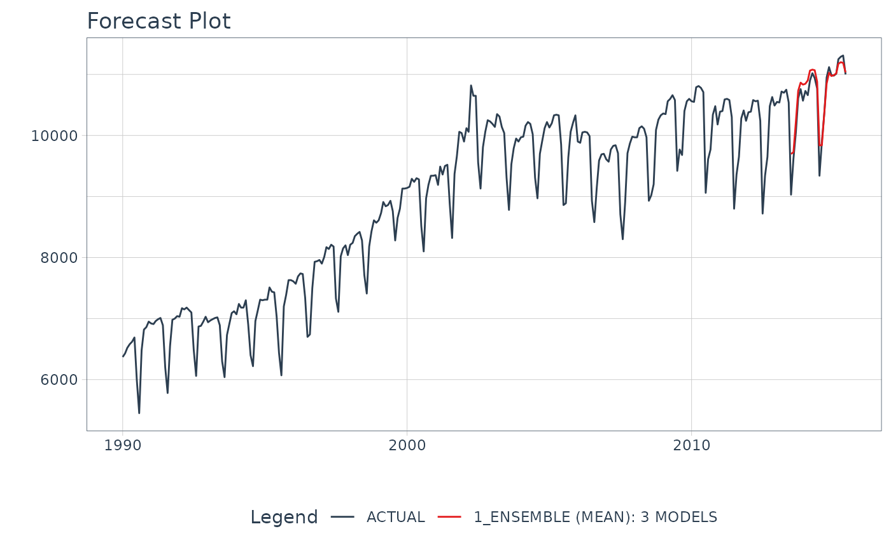

Creates an Ensemble Model using Mean/Median Averaging
Source:R/ensemble_average.R
ensemble_average.RdCreates an Ensemble Model using Mean/Median Averaging
Usage
ensemble_average(object, type = c("mean", "median"))Details
The input to an ensemble_average() model is always a Modeltime Table,
which contains the models that you will ensemble.
Averaging Methods
The average method uses an un-weighted average using type of either:
"mean": Performs averaging usingmean(x, na.rm = TRUE)to aggregate each underlying models forecast at each timestamp"median": Performs averaging usingstats::median(x, na.rm = TRUE)to aggregate each underlying models forecast at each timestamp
Examples
# \donttest{
library(tidymodels)
#> ── Attaching packages ────────────────────────────────────── tidymodels 0.2.0 ──
#> ✔ broom 0.8.0 ✔ recipes 0.2.0
#> ✔ dials 0.1.1 ✔ rsample 0.1.1
#> ✔ dplyr 1.0.9 ✔ tibble 3.1.7
#> ✔ ggplot2 3.3.6 ✔ tidyr 1.2.0
#> ✔ infer 1.0.0 ✔ tune 0.2.0
#> ✔ modeldata 0.1.1 ✔ workflows 0.2.6
#> ✔ parsnip 0.2.1 ✔ workflowsets 0.2.1
#> ✔ purrr 0.3.4 ✔ yardstick 1.0.0
#> ── Conflicts ───────────────────────────────────────── tidymodels_conflicts() ──
#> ✖ purrr::discard() masks scales::discard()
#> ✖ dplyr::filter() masks stats::filter()
#> ✖ dplyr::lag() masks stats::lag()
#> ✖ recipes::step() masks stats::step()
#> • Search for functions across packages at https://www.tidymodels.org/find/
library(modeltime)
library(modeltime.ensemble)
library(tidyverse)
#> ── Attaching packages ─────────────────────────────────────── tidyverse 1.3.1 ──
#> ✔ readr 2.1.2 ✔ forcats 0.5.1
#> ✔ stringr 1.4.0
#> ── Conflicts ────────────────────────────────────────── tidyverse_conflicts() ──
#> ✖ readr::col_factor() masks scales::col_factor()
#> ✖ purrr::discard() masks scales::discard()
#> ✖ dplyr::filter() masks stats::filter()
#> ✖ stringr::fixed() masks recipes::fixed()
#> ✖ dplyr::lag() masks stats::lag()
#> ✖ readr::spec() masks yardstick::spec()
library(timetk)
# Make an ensemble from a Modeltime Table
ensemble_fit <- m750_models %>%
ensemble_average(type = "mean")
ensemble_fit
#> ── Modeltime Ensemble ───────────────────────────────────────────
#> Ensemble of 3 Models (MEAN)
#>
#> # Modeltime Table
#> # A tibble: 3 × 3
#> .model_id .model .model_desc
#> <int> <list> <chr>
#> 1 1 <workflow> ARIMA(0,1,1)(0,1,1)[12]
#> 2 2 <workflow> PROPHET
#> 3 3 <workflow> GLMNET
# Forecast with the Ensemble
modeltime_table(
ensemble_fit
) %>%
modeltime_forecast(
new_data = testing(m750_splits),
actual_data = m750
) %>%
plot_modeltime_forecast(
.interactive = FALSE,
.conf_interval_show = FALSE
)
#> Warning: 'keep_original_cols' was added to `step_dummy()` after this recipe was created.
#> Regenerate your recipe to avoid this warning.
#> Warning: 'keep_original_cols' was added to `step_dummy()` after this recipe was created.
#> Regenerate your recipe to avoid this warning.
#> Warning: 'keep_original_cols' was added to `step_dummy()` after this recipe was created.
#> Regenerate your recipe to avoid this warning.

# }